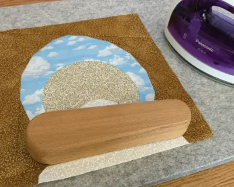
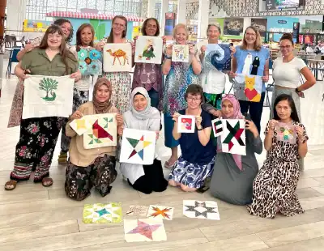

Welcome to
NEWS
Beach Day!
Ten gorgeous Capital Quilters went for a beach day to Al Maya Island, taking advantage of
the Ladies Day free boat ride and entry to the resort. It was a really wonderful day, lots of swimming
and laughter and just generally enjoy each other’s company!
Tool of the Month
The quilter’s clapper, or tailor’s clapper. Made of hard wood, this can be an invaluable tool to anyone who sews. Clappers were first used in England 120 years ago, in dressmaking or tailoring. Press the cool flat wooden clapper flat over a freshly pressed seam for about 5-10 seconds, and it works it’s magic, capturing the steam and locking the heat into the fabric, giving you an extra crisp and flat seam.
All About Capital Quilters
We are a culturally and geographically diverse group of woman with a common interest in sewing. We
meet once a week for
a coffee morning, where we socialise and work on hand sewing projects. We also set up regular
workshops where we have the opportunity to teach each other new skills - sometimes they aren't even
sewing!
Most of us come from a quilting background, but amongst us there are very talented dress-makers, bag
makers, cross stitchers, sashiko stitchers, etc. Some are very experienced, having sewn for 30+
years, and others are complete beginners, only sewing their very first project after joining our
group - with us you will find a warm welcome, no matter your skill or experience.